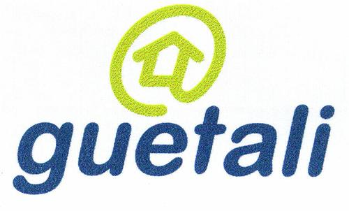

Les débuts d’Internet à la Réunion. Cela commence au milieu des années 90 et se termine en 2000 quand on peut dire que l’accès Internet n’est plus réservé à quelques privilégiés. Dans l’histoire ci-dessous beaucoup d’acteurs ont changé de main, de nom ou tout simplement disparu parce que la compétition est parfois cruelle.
Les réunionnais découvrent la connexion Internet pour les particuliers le 1er mai 1996, quand César Jacquet lance REnet Guetali le premier fournisseur d’accès Internet de l’île. Le mois suivant, c’est Runnet qui est lancé et avec un serveur situé aux États-Unis. Océanes enfin est le troisième provider à voir le jour en octobre 1996 et ses affiches fleurissent sur le bord des routes à coté des publicités pour le 36-15 Bichique.
En 1997 France Telecom arrive en scène avec son offre Wanadoo dont les serveurs sont d’abord en Europe, et un autre FAI local voit le jour sous le nom de Ravnal. Enfin en 2000, le groupe américain UUNET débarque en créant sur l’île Ionet (io comme Indian Ocean).
 L’opérateur historique du réseau mobile de la Réunion est SRR, filiale du SFR national dont la maison měre Cegetel est le chalenger de France Telecom. L’entreprise, filiale de Vivendi ne s’est pas encore attaqué au marché des abonnements Internet. En septembre 1999 Cegetel s’implante à la Réunion en rachetant Océanes puis Guetali. Le nom de Guetali, premier site de la réunion est conservé. Le portail d’Océanes ferme et les abonnés rejoignent guétali en juillet 1999. Les nostalgiques peuvent toujours parcourir les anciennes pages du site (que j’ai archivé) pour se consoler.
Selon un rapport de Protel, les abonnés réunionnais étaient au nombre de 40 000 (à la fois particuliers et entreprises) en décembre 2000. Ceci représente environ 130 000 internautes soit 18 % de la population de l’île.
Depuis septembre 2000 France Telecom propose un abonnement ADSL à Saint-Denis et certaines zones de Sainte-Clothilde. Les travaux se sont poursuivis et depuis le début du mois de mars 2001 l’accès ADSL est disponible à Saint-Pierre, au Tampon, au Port, à Saint-André et dans le quartier des Camélias à Saint-Denis, soit une couverture potentielle de 35 % de la population de l’île.
Deux nouveaux fournisseurs d’accès ont vu le jour en 2000 : Mobius ciblant les entreprises et Outremer Telecom, venue des Antilles et ciblant les particuliers, tous deux avec des offres ADSL.
Le paysage des fournisseurs d’accès a continué à évoluer au gré des fusions et de l’évolution des services. Le nombre de personne connectés a continué à progresser. J’ai régulièrement fait le point dans les articles mensuels ci-dessous :